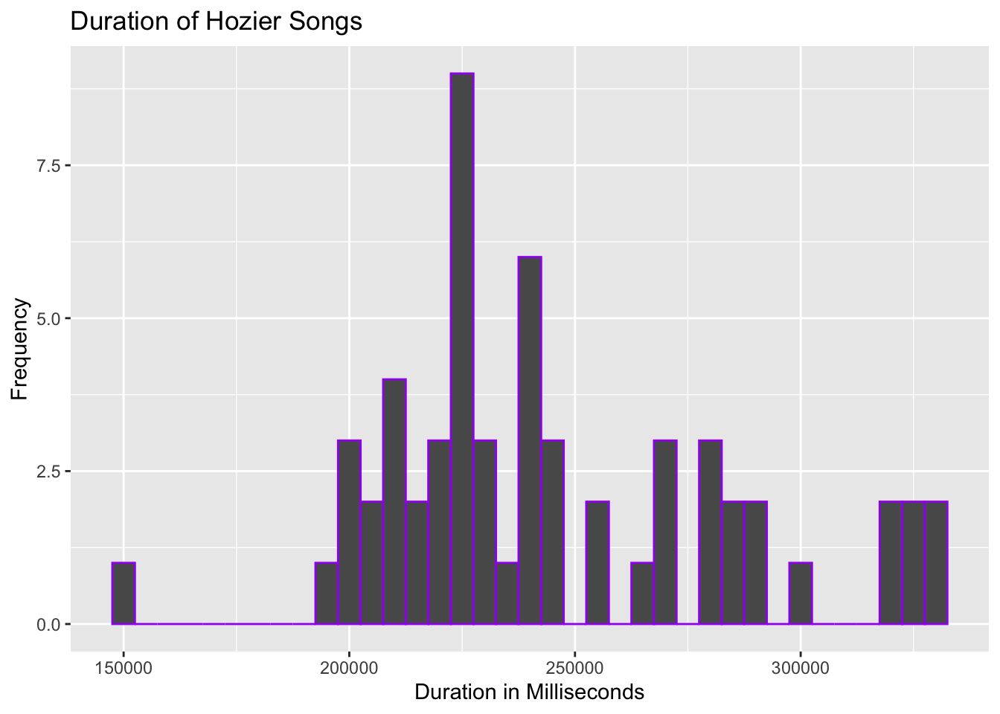
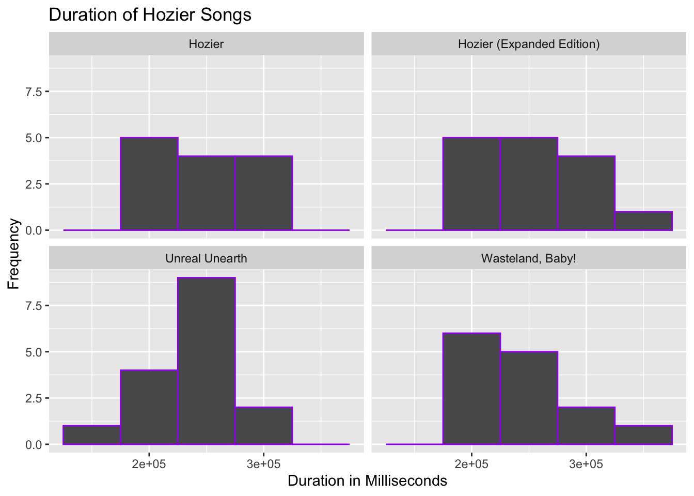
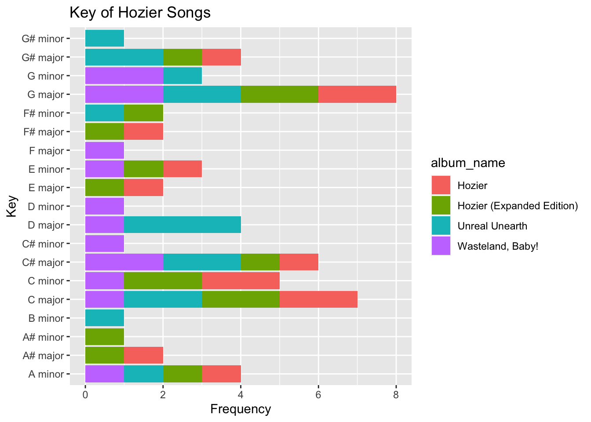
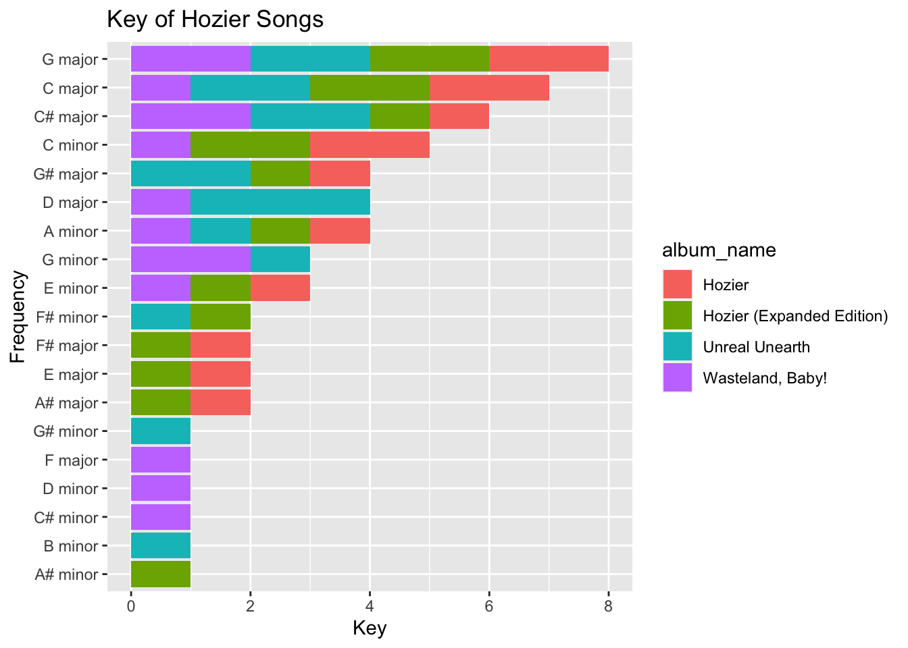
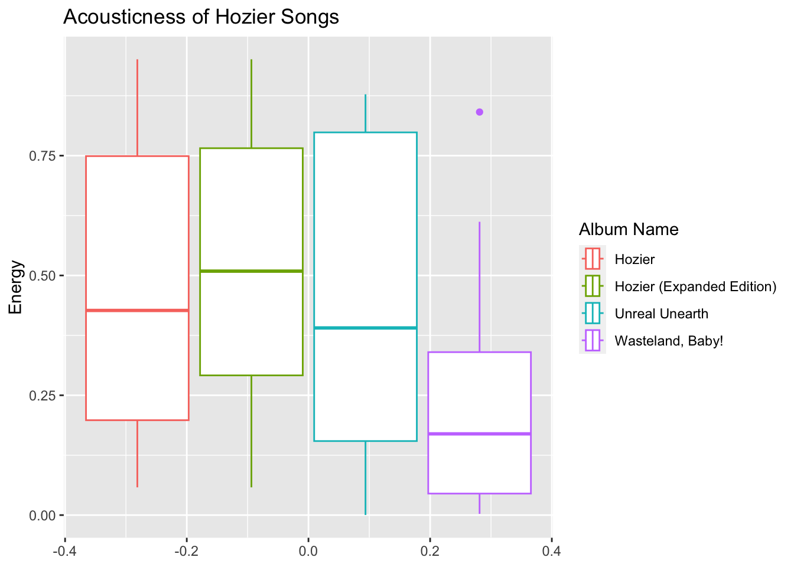
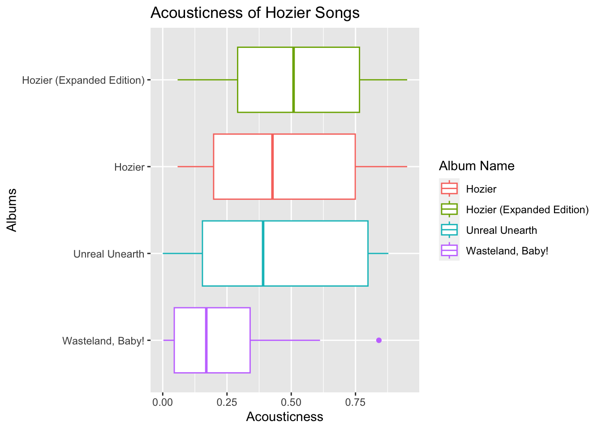

# Load packages
library(tidyverse)
library(spotifyr)SDS192 Lab 3
Today’s Dataset
- Spotify has an Application Programming Interface (API) that allows us to access data about music on the platform.
- We can access data about specific songs, playlists, and artists.
- Variables include things such as acousticness, danceability, and speechiness, album information, and key.
Step 1: Install and Load Packages
In your console install the Spotify R package:
install.packages("spotifyr")
Then load the packages for this lab by running the code below.
Step 2: Create a Spotify Developer Account
- Log-in to Spotify.com or create an account.
- Go to https://developer.spotify.com/dashboard
- Create an app named “SDS192 Lab 3”. You can indicate that this is “for Lab 3”.
- Click “SHOW CLIENT SECRET”.
- Copy client id and secret into the chunk below to replace the current client id and secret, and then run the code chunk.
id <- '855ed4afe4064cee8febe00ec02e3e17'
secret <- 'ab3e242619db48a4bcde4060b50c4873'
Sys.setenv(SPOTIFY_CLIENT_ID = id)
Sys.setenv(SPOTIFY_CLIENT_SECRET = secret)
access_token <- get_spotify_access_token()Step 3: Get Song Features for Your Favorite Artist
Replace the text Janelle Monae below with the name of your favorite artist and then run the code chunk.
artist <- get_artist_audio_features(artist = "Hozier") |>
select(-c(album_images, artists, available_markets))glimpse(artist)Rows: 58
Columns: 36
$ artist_name <chr> "Hozier", "Hozier", "Hozier", "Hozier", "…
$ artist_id <chr> "2FXC3k01G6Gw61bmprjgqS", "2FXC3k01G6Gw61…
$ album_id <chr> "3gF9KIynrJaC80HbVayPMx", "3gF9KIynrJaC80…
$ album_type <chr> "album", "album", "album", "album", "albu…
$ album_release_date <chr> "2023-08-18", "2023-08-18", "2023-08-18",…
$ album_release_year <dbl> 2023, 2023, 2023, 2023, 2023, 2023, 2023,…
$ album_release_date_precision <chr> "day", "day", "day", "day", "day", "day",…
$ danceability <dbl> 0.376, 0.598, 0.439, 0.314, 0.254, 0.546,…
$ energy <dbl> 0.171, 0.861, 0.652, 0.592, 0.176, 0.599,…
$ key <int> 8, 6, 1, 2, 0, 7, 7, 2, 8, 9, 1, 2, 8, 0,…
$ loudness <dbl> -14.654, -5.351, -7.158, -7.182, -14.979,…
$ mode <int> 0, 0, 1, 1, 1, 0, 1, 1, 1, 0, 1, 1, 1, 1,…
$ speechiness <dbl> 0.0410, 0.0604, 0.0847, 0.0344, 0.0368, 0…
$ acousticness <dbl> 0.814000, 0.081400, 0.177000, 0.000241, 0…
$ instrumentalness <dbl> 8.45e-03, 6.52e-04, 5.17e-05, 2.03e-06, 2…
$ liveness <dbl> 0.1490, 0.1850, 0.1210, 0.1220, 0.0853, 0…
$ valence <dbl> 0.1390, 0.6440, 0.4710, 0.1800, 0.1960, 0…
$ tempo <dbl> 68.033, 161.956, 79.942, 177.939, 77.406,…
$ track_id <chr> "78x3oT0wyvcm9GRmuAP6Vq", "3SRtygyWBQnoxu…
$ analysis_url <chr> "https://api.spotify.com/v1/audio-analysi…
$ time_signature <int> 4, 4, 4, 4, 4, 4, 3, 4, 3, 4, 3, 1, 4, 4,…
$ disc_number <int> 1, 1, 1, 1, 1, 1, 1, 1, 1, 1, 1, 1, 1, 1,…
$ duration_ms <int> 219693, 227826, 233173, 270066, 196613, 2…
$ explicit <lgl> FALSE, FALSE, FALSE, FALSE, FALSE, FALSE,…
$ track_href <chr> "https://api.spotify.com/v1/tracks/78x3oT…
$ is_local <lgl> FALSE, FALSE, FALSE, FALSE, FALSE, FALSE,…
$ track_name <chr> "De Selby (Part 1)", "De Selby (Part 2)",…
$ track_preview_url <chr> "https://p.scdn.co/mp3-preview/1246fb87e8…
$ track_number <int> 1, 2, 3, 4, 5, 6, 7, 8, 9, 10, 11, 12, 13…
$ type <chr> "track", "track", "track", "track", "trac…
$ track_uri <chr> "spotify:track:78x3oT0wyvcm9GRmuAP6Vq", "…
$ external_urls.spotify <chr> "https://open.spotify.com/track/78x3oT0wy…
$ album_name <chr> "Unreal Unearth", "Unreal Unearth", "Unre…
$ key_name <chr> "G#", "F#", "C#", "D", "C", "G", "G", "D"…
$ mode_name <chr> "minor", "minor", "major", "major", "majo…
$ key_mode <chr> "G# minor", "F# minor", "C# major", "D ma…head(artist) artist_name artist_id album_id album_type
1 Hozier 2FXC3k01G6Gw61bmprjgqS 3gF9KIynrJaC80HbVayPMx album
2 Hozier 2FXC3k01G6Gw61bmprjgqS 3gF9KIynrJaC80HbVayPMx album
3 Hozier 2FXC3k01G6Gw61bmprjgqS 3gF9KIynrJaC80HbVayPMx album
4 Hozier 2FXC3k01G6Gw61bmprjgqS 3gF9KIynrJaC80HbVayPMx album
5 Hozier 2FXC3k01G6Gw61bmprjgqS 3gF9KIynrJaC80HbVayPMx album
6 Hozier 2FXC3k01G6Gw61bmprjgqS 3gF9KIynrJaC80HbVayPMx album
album_release_date album_release_year album_release_date_precision
1 2023-08-18 2023 day
2 2023-08-18 2023 day
3 2023-08-18 2023 day
4 2023-08-18 2023 day
5 2023-08-18 2023 day
6 2023-08-18 2023 day
danceability energy key loudness mode speechiness acousticness
1 0.376 0.171 8 -14.654 0 0.0410 0.814000
2 0.598 0.861 6 -5.351 0 0.0604 0.081400
3 0.439 0.652 1 -7.158 1 0.0847 0.177000
4 0.314 0.592 2 -7.182 1 0.0344 0.000241
5 0.254 0.176 0 -14.979 1 0.0368 0.798000
6 0.546 0.599 7 -6.442 0 0.0286 0.350000
instrumentalness liveness valence tempo track_id
1 8.45e-03 0.1490 0.139 68.033 78x3oT0wyvcm9GRmuAP6Vq
2 6.52e-04 0.1850 0.644 161.956 3SRtygyWBQnoxuOPtdBPm2
3 5.17e-05 0.1210 0.471 79.942 4LesrBswFnLcHmwDslst1q
4 2.03e-06 0.1220 0.180 177.939 6QnfsyzifAJJrNHYTO6j9J
5 2.66e-02 0.0853 0.196 77.406 3EN1l4uUvFBOy3pD9we2jf
6 6.86e-02 0.2560 0.331 90.000 2SXx7Ofa79CeJfio98aJcG
analysis_url
1 https://api.spotify.com/v1/audio-analysis/78x3oT0wyvcm9GRmuAP6Vq
2 https://api.spotify.com/v1/audio-analysis/3SRtygyWBQnoxuOPtdBPm2
3 https://api.spotify.com/v1/audio-analysis/4LesrBswFnLcHmwDslst1q
4 https://api.spotify.com/v1/audio-analysis/6QnfsyzifAJJrNHYTO6j9J
5 https://api.spotify.com/v1/audio-analysis/3EN1l4uUvFBOy3pD9we2jf
6 https://api.spotify.com/v1/audio-analysis/2SXx7Ofa79CeJfio98aJcG
time_signature disc_number duration_ms explicit
1 4 1 219693 FALSE
2 4 1 227826 FALSE
3 4 1 233173 FALSE
4 4 1 270066 FALSE
5 4 1 196613 FALSE
6 4 1 243946 FALSE
track_href is_local
1 https://api.spotify.com/v1/tracks/78x3oT0wyvcm9GRmuAP6Vq FALSE
2 https://api.spotify.com/v1/tracks/3SRtygyWBQnoxuOPtdBPm2 FALSE
3 https://api.spotify.com/v1/tracks/4LesrBswFnLcHmwDslst1q FALSE
4 https://api.spotify.com/v1/tracks/6QnfsyzifAJJrNHYTO6j9J FALSE
5 https://api.spotify.com/v1/tracks/3EN1l4uUvFBOy3pD9we2jf FALSE
6 https://api.spotify.com/v1/tracks/2SXx7Ofa79CeJfio98aJcG FALSE
track_name
1 De Selby (Part 1)
2 De Selby (Part 2)
3 First Time
4 Francesca
5 I, Carrion (Icarian)
6 Eat Your Young
track_preview_url
1 https://p.scdn.co/mp3-preview/1246fb87e8c13ba8b3cf8b398a65ee5456b91bad?cid=855ed4afe4064cee8febe00ec02e3e17
2 https://p.scdn.co/mp3-preview/78aff0ba988c329cf2139daa2f5f9dff20762973?cid=855ed4afe4064cee8febe00ec02e3e17
3 https://p.scdn.co/mp3-preview/9e1308630e66ff952ed852cb10c10026fc1ed47f?cid=855ed4afe4064cee8febe00ec02e3e17
4 https://p.scdn.co/mp3-preview/887c5c62316b6066e62263c13d1d8ea1478103a2?cid=855ed4afe4064cee8febe00ec02e3e17
5 https://p.scdn.co/mp3-preview/f9fd7123f805daf6611a8e66f2088973b5e17a32?cid=855ed4afe4064cee8febe00ec02e3e17
6 https://p.scdn.co/mp3-preview/8ee1bc8dab872019abe1064bc81c0772ae215990?cid=855ed4afe4064cee8febe00ec02e3e17
track_number type track_uri
1 1 track spotify:track:78x3oT0wyvcm9GRmuAP6Vq
2 2 track spotify:track:3SRtygyWBQnoxuOPtdBPm2
3 3 track spotify:track:4LesrBswFnLcHmwDslst1q
4 4 track spotify:track:6QnfsyzifAJJrNHYTO6j9J
5 5 track spotify:track:3EN1l4uUvFBOy3pD9we2jf
6 6 track spotify:track:2SXx7Ofa79CeJfio98aJcG
external_urls.spotify album_name key_name
1 https://open.spotify.com/track/78x3oT0wyvcm9GRmuAP6Vq Unreal Unearth G#
2 https://open.spotify.com/track/3SRtygyWBQnoxuOPtdBPm2 Unreal Unearth F#
3 https://open.spotify.com/track/4LesrBswFnLcHmwDslst1q Unreal Unearth C#
4 https://open.spotify.com/track/6QnfsyzifAJJrNHYTO6j9J Unreal Unearth D
5 https://open.spotify.com/track/3EN1l4uUvFBOy3pD9we2jf Unreal Unearth C
6 https://open.spotify.com/track/2SXx7Ofa79CeJfio98aJcG Unreal Unearth G
mode_name key_mode
1 minor G# minor
2 minor F# minor
3 major C# major
4 major D major
5 major C major
6 minor G minorStep 5: Create a Histogram Visualizing the Distribution of Values in a Song Feature of Your Choice
- Be sure to add labels to your plot.
- Set appropriate
binwidthfor bins. - Set the line color for bins.
ggplot( data = artist, aes(x=duration_ms)) +
geom_histogram(color = "purple", binwidth = 5000) +
labs(title = "Duration of Hozier Songs",
x = "Duration in Milliseconds",
y = "Frequency") 
Discussion: How do you interpret this plot? > Interpreting histograms: (1) Peaks; (2) Spread; (3) Skewed data; (4) Outliers.
Answer: There appears to be a peak at 225000 milliseconds which means that the highest frequency of songs are around this length. The range is from [150000, 350000] milliseconds which means that those are the maximum and minimum song lengths. The data is skewed left. There are outliers at 150000 seconds.
Step 6: Facet Your Previous Plot by Album Name
Set nrow of your choice in the facet_wrap function.
ggplot( data = artist, aes(x=duration_ms)) +
geom_histogram(color = "purple", binwidth = 50000) +
labs(title = "Duration of Hozier Songs",
x = "Duration in Milliseconds",
y = "Frequency") +
facet_wrap(vars(album_name), nrow=2)
Discussion: What do the distributions indicate? What do you learn when comparing distributions across albums?
Answer:
The distributions indicate that the “Hozier” album has the most consistent song length for all of its songs. Interestingly, “Hozier (Expanded Edition)” has longer songs than just “Hozier”, indicating that the bonus songs are longer than the original songs. “Unreal Unearth” is skewed left while “Wasteland, Baby!” is skewed right, indicating that “Unreal Unearth” has shorter songs on average than “Wasteland, Baby!”
Step 7: Create a Stacked, Dodged, or Filled Barplot Visualizing the Frequency of Songs in Each Album and Key Mode for This Artist
Use the coord_flip() function to flip the x-axis and the y-axis. Also, be sure to add labels to your plot.
ggplot(data = artist, aes(x=key_mode, fill = album_name)) +
geom_bar() +
coord_flip() +
labs(
title = "Key of Hozier Songs",
x = "Key",
y = "Frequency") 
Step 8: Reorder the x-axis of Your Previous Plot
I want to reorder my x-axis, so I will place the reorder() function around my x aesthetic, and assign the following arguments:
- the values to be reordered:
key_mode - the values will serve as the basis for reordering:
key_mode - and a function to determine how values will be reordered:
length
ggplot(data = artist, aes(reorder(key_mode, key_mode, length),
fill = album_name)
) +
geom_bar() +
coord_flip()+
labs(
title = "Key of Hozier Songs",
x = "Frequency",
y = "Key")
Discussion: What do the frequencies indicate? What do you learn when comparing frequencies across albums?
Answer:
The frequencies indicate the number of songs in each key. I have learned that “Hozier” had no songs in G# minor, F major, D minor, C# minor, B minor, or A# minor. The rest of the albums are pretty evenly distributed between the keys. Hozier’s most common keys by far are G major and C major.
Step 9: Create Grouped Boxplots Visualizing the Distribution of Values in a Song Feature of Your Choice, Grouped by Album Name
Use the coord_flip() function to flip the x-axis and the y-axis. Also, be sure to add labels to your plot.
ggplot( data = artist, aes(acousticness, color = album_name)) +
geom_boxplot() +
coord_flip() +
labs (
title = "Acousticness of Hozier Songs",
color = "Album Name",
x = "Energy"
)
Step 10: Reorder the x-axis of Your Previous Plot
I want to reorder my x-axis, so I will place the reorder() function around my x aesthetic, and assign the following arguments:
- the values to be reordered:
album_name - the values will serve as the basis for reordering:
valence(yours will be the song feature of your choice) - and a function to determine how values will be reordered:
median
ggplot( data = artist, aes(x = reorder(album_name, acousticness, median), y = acousticness, color = album_name)) +
geom_boxplot() +
coord_flip() +
labs (
title = "Acousticness of Hozier Songs",
color = "Album Name",
x = "Albums",
y = "Acousticness"
)
Discussion: How do you interpret this plot? > Interpreting boxplots: (1) Check for outliers; (2) Compare medians; (3) Compare the ranges; (4) Compare the IQRs; (5) Compare the symmetry. (Questions in Lec 6 Slides Page 14-18 will be a good guide to answer this.)
Answer: 1. The only apparent outlier is in “Wasteland, Baby!”. One song is extremely more acoustic than the rest of the album, being close to 0.8 on the acoustic scale while the rest of the album is well below 0.6. This implies that while most of the songs on the album are very un-acoustic (more production/synth), one song is very acoustic.
Hozier (Expanded Edition) has the highest median, but each album except Wasteland, Baby! has about the same median. Wasteland, Baby! has a much lower median, around 0.2 while the other three are between 0.4 and 0.5. This means that on average, Wasteland, Baby! is the least acoustic album of Hozier.
The ranges of Hozier, Hozier(Expanded Edition), and Unreal Unearth are about the same, at about 0.8. Wasteland baby has a much smaller range, of about 0.6.
The IQR of Wasteland Baby! is the smallest, while Unreal Unearth is the biggest. Hozier and Hozier(Expanded Edition) have similar IQRs, but Hozier’s is slightly longer.
Hozier (Expanded Edition) is by far the most symmetric, while Wasteland, Baby! is certainly the least symmetric, being very right skewed. Hozier and Unreal Unearth are also right skewed, but not nearly as much.
Step 11: Ethical Considerations
Discussion: Check out this article documenting ethical concerns regarding Spotify’s data collection practices. Should we be concerned about the assumptions that Spotify makes about us based on our music streaming habits? What about the way they curate music for us? What are some of the social consequences to this form of user surveillance? (no more than 150 words) 1
Use the readings under Lec 10 on our course webpage as references for answering this question.
Answer:
I think we should be moderately concerned about Spotify’s algorithm. Because Spotify is a company that has built its business model on accurately recommending music to its users, it makes sense that it would collect data on the genres, moods, and listening habits of its users. However, Spotify becomes unethical when it records data about a user’s gender, location, mood, and sexuality, and furthermore, sells it for a profit. Because Spotify’s algorithm is based on real-life data sets, it is subject to real-life biases in its recommendation system. However, Spotify’s data collection is interesting because it’s so popular- everybody (including myself) looks forward to their Spotify Wrapped at the end of the year. I don’t think Spotify is inherently unethical in collecting data and using it for Wrapped and recommendations. However, potential social consequences of collecting personal data include outing people, discrimination, and privacy concerns.
Footnotes
Here is an example footnote to be used as a citation.↩︎